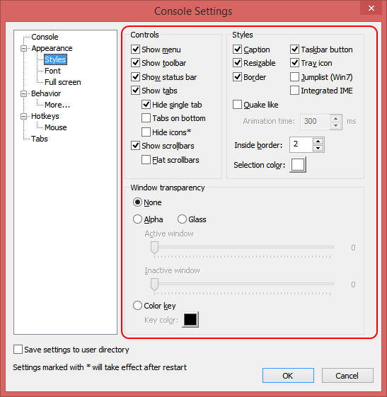

Caption
If checked, main window will have a title bar.
Resizable
If checked, main window will be resizable.
Border
If checked, main window will have a border.
Hide when inactive
If checked, main window is hidden when ConsoleZ is inactive. If Taskbar button is visible, main window is minimized; otherwise main window is hidden.
Quake-style
If checked, ConsoleZ uses a Quake-style console effect when showing or hiding.
This animation requires a global hotkey to hide/show the application. Assign a hotkey to the command Activate ConsoleZ (global) in Settings/HotKeys.
Window must be docked to a screen edge to determine animation direction. Select a Docking value, other than none, in Settings/Appearance.
If AERO is active, non-client area is not supported. Consider to uncheck Caption and Resizable.
Animation time
The time it takes to play the animation, in milliseconds.
Taskbar button
If checked, ConsoleZ taskbar button will be visible.
Tray icon
If checked, ConsoleZ will show an icon in the tray bar.
Jumplist (Win7)
If checked, ConsoleZ will create Windows 7 jumplist (shortcut for every tab accessible by right-clicking the icon in the taskbar).
Integrated IME
If checked, the Input Method Editor is integrated to the application (at the cursor position).
Per-monitor DPI
If checked, main window is per-monitor high DPI aware; otherwise main window is only high DPI aware. If your OS doen't support per-monitor high DPI awareness, high DPI awareness will be used.
Inside border
Specifies ConsoleZ inside (client area) border.
Selection
Legacy theme: Sets the background color of the selection. The foreground color will be affected by this color.
Aero theme: Sets the transparent overlay color of the selection.
Highlight
Legacy theme: Sets the background color of the highlighted text. The foreground color will be affected by this color.
Aero theme: Sets the transparent overlay color of the highlighted text.
Windowed/Fullscreen
If Windowed is selected, you are editing control settings available in windowed mode.
If Full screen is selected, you are editing control settings available in full screen mode.
Show menu
Shows/hides main menu.
Show toolbar
Shows/hides toolbar.
Show search bar
Shows/hides search bar.
Show status bar
Shows/hides status bar.
Show scrollbars
If checked, scrollbars will be shown if the underlying console shows them. If not checked, scrollbars will be always hidden.
Show tabs
Shows/hides tabs bar.
Hide single tab
If checked, tabs bar will be hidden if there's only one tab active.
Tabs on bottom
If checked, tabs bar will appear at the bottom of the main window.
Hide icons
If checked, icons are hidden in the tabs bar.